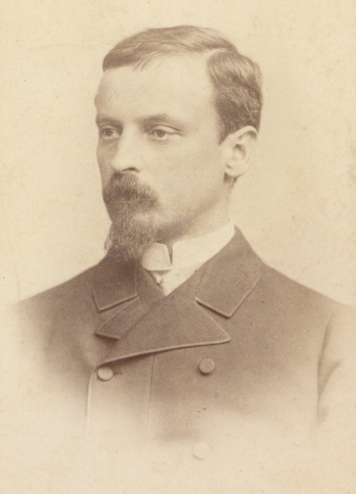

Henryk Sienkiewicz (1846 - 1916) là văn hào Ba Lan sinh ra tại Wola Okrzejska trong một gia đình gốc gác quý tộc. Ông từng theo học luật học, y học trước khi chuyên tâm vào sự nghiệp viết lách. Khởi đầu bằng những tiểu luận phê bình đăng báo, ông dần sáng tác hàng loạt truyện ngắn và vừa, rồi tập trung vào thể loại tiểu thuyết lịch sử vào năm 1892. Sau Quo vadis, ông dành thời gian vào việc viết cuốn tiểu thuyết lịch sử Hiệp sĩ Thánh chiến mà mình thai nghén từ lâu. Công việc sáng tác kéo dài ròng rã bốn năm trời, và nhà văn đã cho đăng dần tác phẩm trên các tờ báo Ba Lan, mãi đến năm 1900 mới in thành sách. Những giá trị về nội dung và nghệ thuật lớn lao đã khiến cho Hiệp sĩ Thánh chiến trở thành tài sản văn hóa tinh thần quý giá của dân tộc Ba Lan. Ông đạt giải Nobel Văn học năm 1905. Sau thời kỳ bệnh tật kéo dài, Henryk Sienkiewicz chuyển hướng sang viết cho độc giả trẻ tuổi hơn, thành tựu nổi bật có Trên sa mạc và trong rừng thẳm (1910 – 1913). Ông qua đời tại Vevey, Thụy Sĩ.